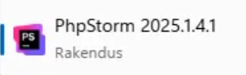
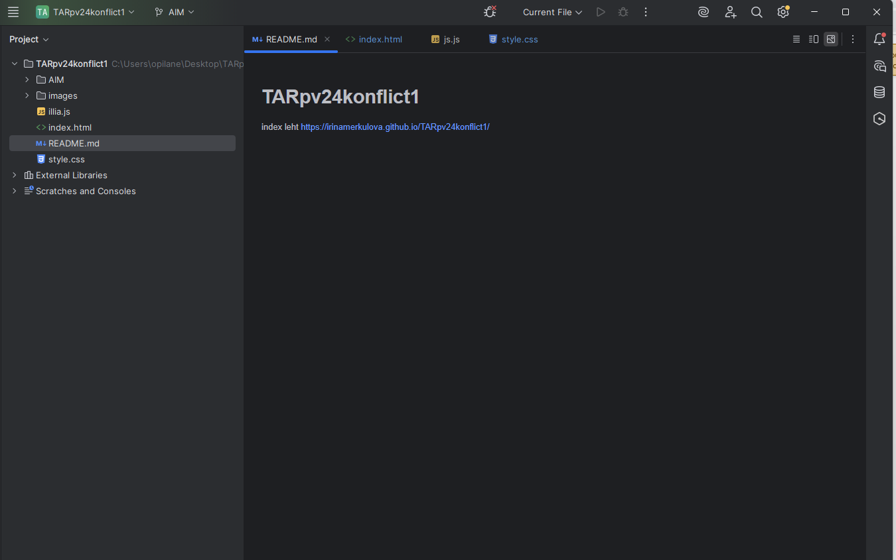
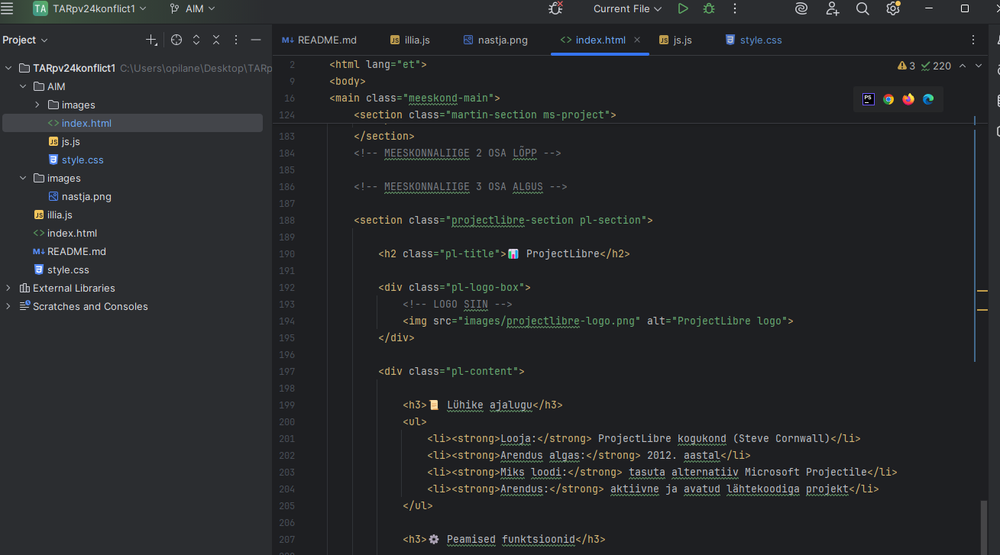
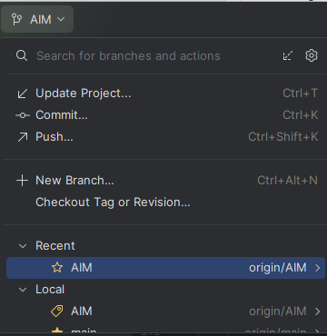
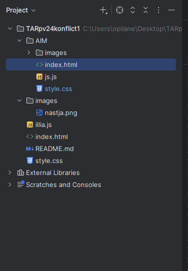
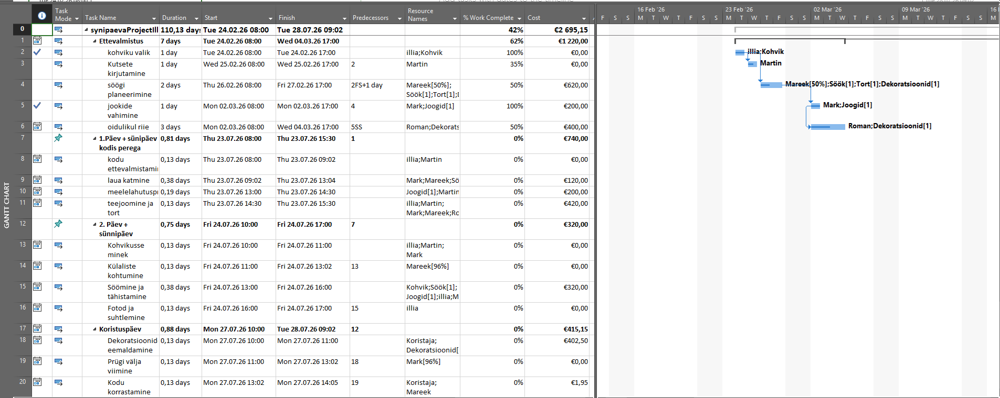
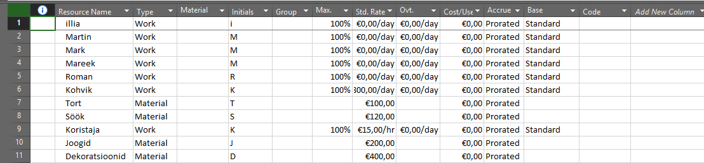
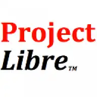
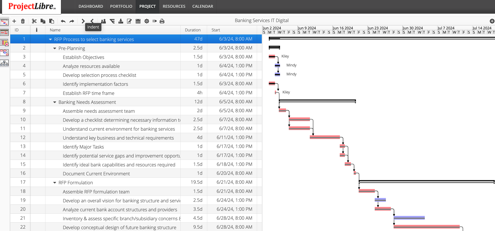

PhpStorm
JetBrains · Professionaalne PHP IDE
Lühike ajalugu
- Looja: JetBrains (Tšehhi firma, asutatud 2000. aastal)
- Esimene väljalase: 2009. aastal
- Miks loodi: PHP arendajatel puudus tõeliselt nutikas IDE — PhpStorm täitis selle lünga
- Praegune versioon: PhpStorm 2025.1.4.1 — arendus aktiivne
Peamised funktsioonid
PhpStorm on täisfunktsionaalne IDE (Integrated Development Environment), mis mõistab PHP koodi süviti — see ei ole lihtsalt tekstiredaktor. IDE analüüsib koodi reaalajas, leiab vigu enne käivitamist, pakub nutikaid soovitusi ja toetab kõiki populaarseid PHP raamistikke nagu Laravel, Symfony ja WordPress. Lisaks PHP-le toetab PhpStorm ka HTML-i, CSS-i, JavaScripti ja TypeScripti, mis teeb selle universaalseks tööriistaks veebiarendajatele.
Ekraanipildid

TARpv24konflikt1 projekt AIM bränchis. images/ kaustas on juba nastja.png lisatud — pilt on edukalt üles laaditud projekti.

PhpStorm 2025.1.4.1 — JetBrainsi uusim versioon, mis on arvutisse installitud rakendusena.

README.md on aktiivne vahekaart. Ülaosas on lahti korraga README.md, index.html, js.js ja style.css — PhpStorm võimaldab töötada mitme failiga samal ajal.

index.html redigeerimine — näha on meeskonnaliikmete osade kommentaarid (MEESKONNALIIGE 2, 3 OSA ALGUS/LÕPP). PhpStorm värvib HTML süntaksi automaatselt.

AIM bränchi menüü: Update Project (Ctrl+T), Commit (Ctrl+K), Push (Ctrl+Shift+K). AIM on aktiivne bränch — nii kohalikult kui ka GitHubis (origin/AIM).
Microsoft Project

📜 Lühike ajalugu
- Looja: Microsoft
- Arendus algas: 1984. aastal
- Miks loodi: projektide haldamiseks ja tööde planeerimiseks
- Arendus: programm on tänapäeval endiselt aktiivses arenduses
⚙️ Peamised funktsioonid
Microsoft Project on projektijuhtimise tarkvara, mis aitab planeerida ülesandeid, hallata ressursse ja jälgida projekti edenemist.
- 📅 Ülesannete ja ajakava planeerimine
- 👥 Ressursside haldamine
- 📊 Gantti diagrammid
- 📈 Edenemise jälgimine
🖼️ Pildid

Visuaalne ajakava, mis näitab ülesannete kestust, järjekorda ja seoseid projektis.

Tabel, kus hallatakse projekti ressursse, nagu inimesed, seadmed ja töökoormus.
📊 ProjectLibre

📜 Lühike ajalugu
- Looja: ProjectLibre kogukond (Steve Cornwall)
- Arendus algas: 2012. aastal
- Miks loodi: tasuta alternatiiv Microsoft Projectile
- Arendus: aktiivne ja avatud lähtekoodiga projekt
⚙️ Peamised funktsioonid
ProjectLibre on projektihalduse tarkvara, mis võimaldab planeerida projekte, hallata ressursse ja luua ajakavasid.
- 📅 Gantt diagrammid
- 👥 Ressursside haldus
- ⏱️ Projekti ajakava planeerimine
- 📂 MS Project failide tugi
- 📊 Raportite ja analüüside loomine
🖼️ Pildid (screenshots)

Näitab projekti ajakava, ülesandeid ja nende kestust visuaalselt.

Aitab hallata inimesi, töökoormust ja ressursse projektis.